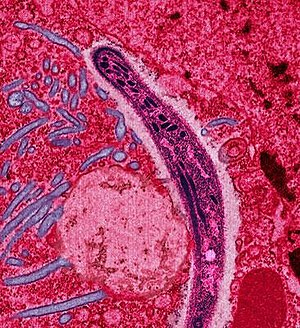

Malaria este o boală infecțioasă transmisă de țânțarul Anopheles, care se manifestă prin friguri puternice și intermitente. Malaria este o boală infecțioasă larg răspândită în regiunile tropicale și subtropicale. Între 300 și 500 de milioane de persoane sunt infectate anual; aproximativ 1 - 3 milioane mor în fiecare an, cei mai mulți fiind copii din Africa sub-sahariană.Malaria este o boală infecțioasă transmisă de țânțar la oameni și animale, cauzată de protozoare parazitare (un tip de microorganism) unicelular de tipul Plasmodium. La acele persoane care nu au fost tratate în mod corespunzător, boala poate recidiva câteva luni mai târziu. La cei care au supraviețuit recent unei infectări, reinfectarea cauzează, de obicei, simptome mai blânde. Această rezistență parțială dispare după câteva luni și până la câțiva ani, dacă nu există o expunere continuă la malarie.
Ingineria genetică și boli - Malaria ↑